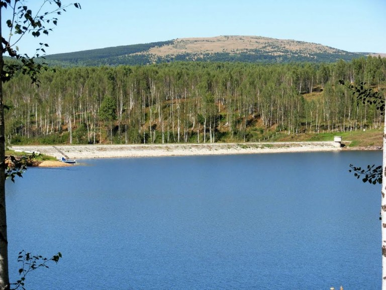

Mističnost i jezive močvare sa klokotavim dubinama u narodu su stvarali veliki strah i ispredale su se brojne legende o neobjašnjivim nestancima konja, ovaca i stoke, koje je gutalo živo blato. Početkom Prvog svetskog rata ovde je stradao ceo konjički puk bugarske vojske, kada se, ne znajući šta predstavlja zaravan ka kojoj se povlači, podavio u dubinama žitkih ritova.
Tako je nastala i legenda o vodenom jezerskom čudovištu nalik na džinovskog konja, koje se skriva u tajanstvenim dubinama. Verovalo se da ono kao avet dolazi do obale i uništava najbolje konje i goveda i da tu živi vekovima, a poslato je sa nekih dalekih nezemaljskih svetova ili od strane Boga da kažnjava grešne i neposlušne. Verovalo se i da je pojavljivanje ove nemani u isto vreme predskazanje pobede u ratovima, posebno jer se tresava, ili kako to narod kaže, potresulja, uz jezivu riku najviše tresla i ključala iz globila kada su se Srbi oslobodili od Turaka, ali i uoči dva svetska rata.
Obilazivši pogranične krajeve, kralj Milan je čuo ove strašne priče i naredio da se izmeri dubina Vlasinske tresave. Vojnici su pokušali da je izmere sa nekadašnjeg drvenog mosta kod Tadžine mahale uz pomoć kamena privezanog na 30 metara dug konopac, ali dno nisu dodirnuli. Tada se pojavila nova legenda da močvara nema dno.
Sredinom 20. veka, čim se završio rat, počinje podizanje brane na tesnacu koji je pravila Vlasina izlazeći iz Vlasinskog blata. Posle tri godine gradnje zemljane pregrade, koja je sa jedne strane obložena kamenim blokovima, a druge oborena zatravljenim kaskadama i još pet godina punjenja velikog udubljenja vodom, nastalo je Vlasinsko jezero ovakvo kakvim ga danas znamo. Sa nadmorskom visinom od preko hiljadu metara, ono je najviše veštačko jezero na Balkanu. Tako se u dubini visoravni razlila velika modra voda, a čudovište je ostalo da živi u starim danima i pričama.

Toliko rada na jezeru donelo je i mnoge promene. Nestale su biljke tresetnice, ali i zauvek odletele rode i divlje guske. Jedino mesto koje danas još liči na staru močvaru ostalo je kod izvorišta rečice Blato u blizini Crne Trave.
Ipak, ono što je uvek isto su stalna ostrva.
Stratorija je bila tu još u vreme Vlasinskog blata, ali Dugi Del je pre izgradnje brane bio poluostrvo, a sada se proteže usred jezera dok ga sa svih strana zapljuskuju modre vode.
Ali, ono što ga stalno menja, čini drugačijim, ali i jedinstvenim u Evropi, ako zanemarimo postojanje sličnih pojava u Škotskoj jesu čuvena vlasinska plutajuća ostrva. Odmah po stvaranju jezera čak je trećina bila prekrivena ovim jedinstvenim plovećim busenjem trave, tačnije onog nekadašnjeg treseta koji se otkinuo sa dna i isplivao na površinu.